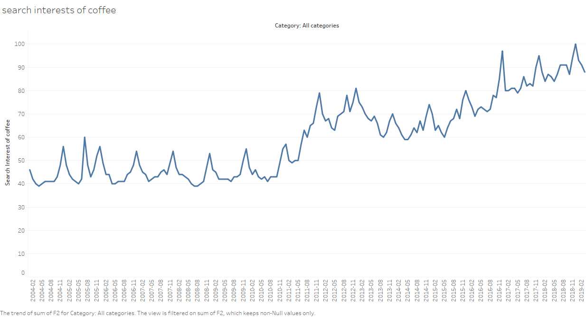
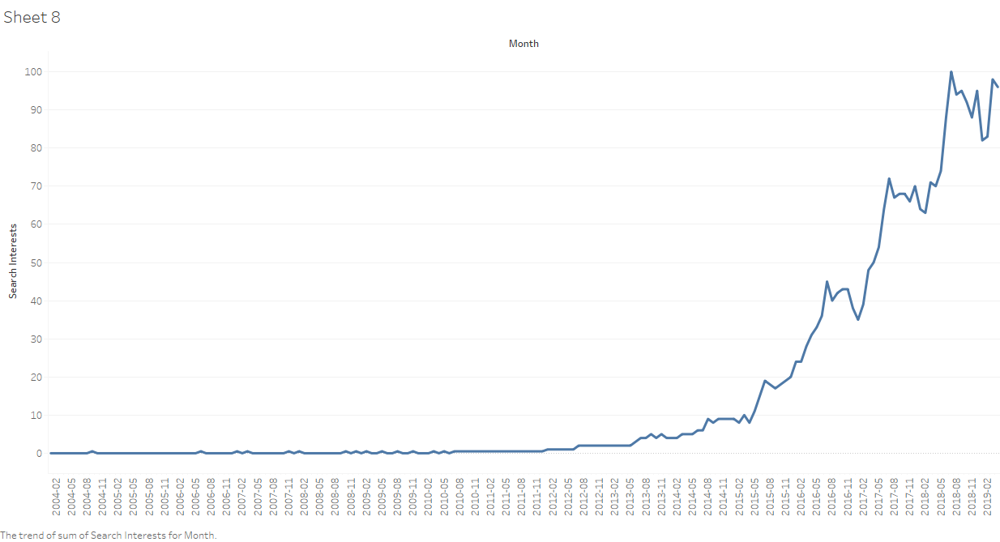

Learn D3 in 5 minutes
Caffeine and health?
How much caffeine should an adult consume every day?
Search interests in the past 15 years in the United States?
Change in search interests from 2004 to 2019:

Search interests for coffee by states:
Search interests trend for "coffee near me"
from 2004 to 2019:

Difference in different kinds of coffee?
At the height of a barista’s craft lies the cappuccino. Dark, rich espresso lies in wait under a smoothed and stretched
layer of thick foam. Trained to know when each drink has reached a specific weight,
our baristas pass the test when the drink you hold in your hand is a perfect balance of light and airy foam and deeply
delicious espresso.
With the layers more distinct, the coffee flavor is strong.
Baristas craft the latte in a very different way. The layers of espresso and steamed milk are mixed together and topped
with a light layer of foam. The drink is creamier and the coffee flavor is more subtle.
Cold Brew is made without heat, which creates lower acidity for a smoother, naturally sweet taste.
Iced Coffee is brewed double strength then cooled, which creates a refreshing, lighter body.
It’s served sweetened, often with a splash of milk.
Both equally refreshing, iced coffee has notes of caramel and cola, while the iced americano creates a wonderfully
rich cup with depth and nuance.